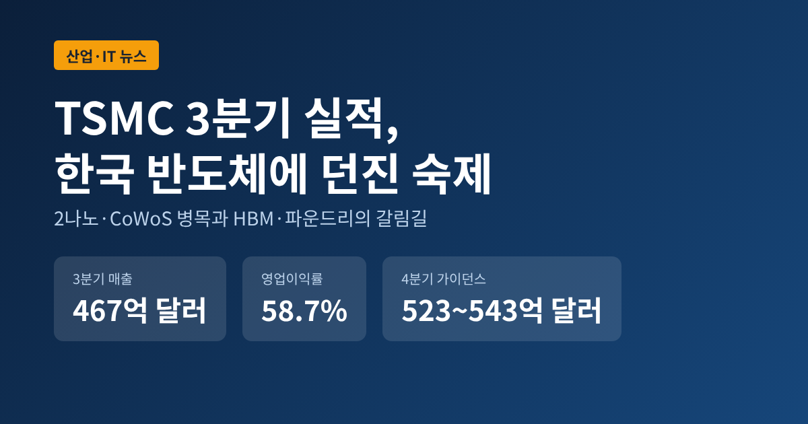
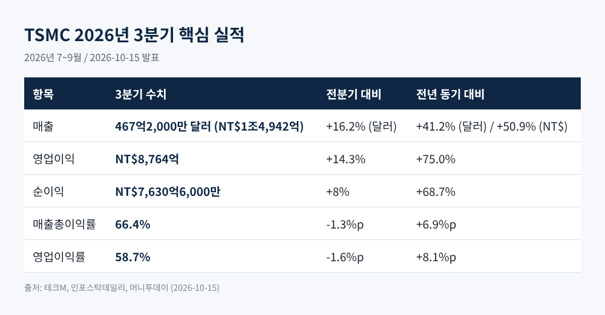
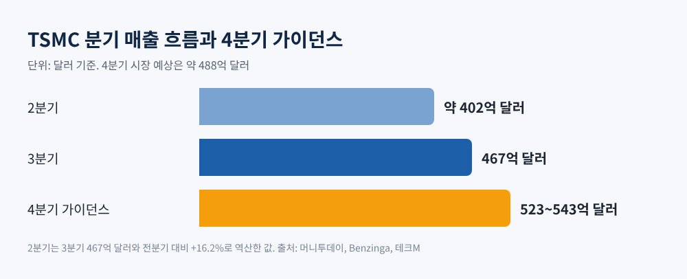
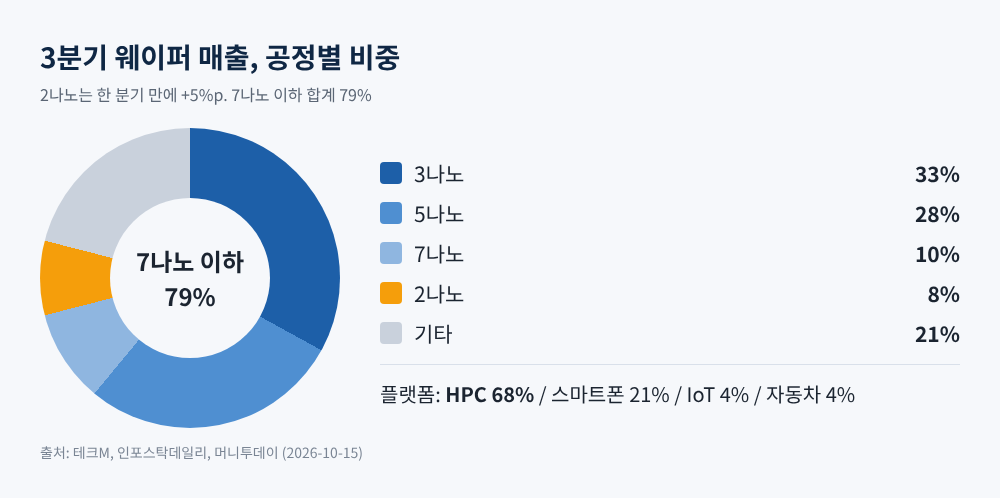
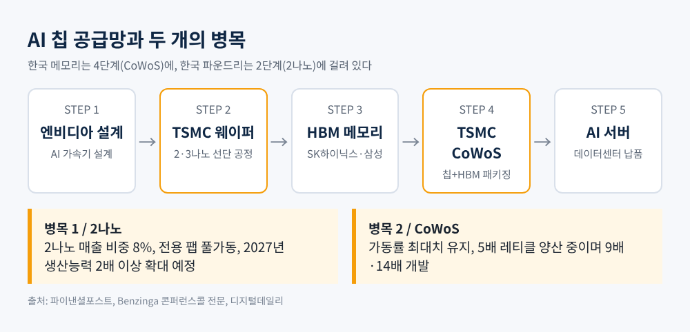
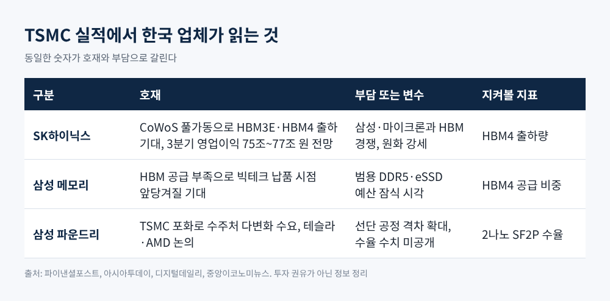

이번 글에서는 10월 15일 발표된 TSMC의 2026년 3분기 실적을 정리해 보겠습니다. 숫자 자체보다, 그 숫자가 SK하이닉스와 삼성전자의 HBM·파운드리 사업에 무엇을 시사하는지에 무게를 두었습니다. 투자 권유가 아닌 뉴스 해설이라는 점을 먼저 밝혀 둡니다.
3줄 요약
TSMC는 현지시간 10월 15일 7~9월 실적을 공개했습니다. 매출은 NT$1조4,942억, 우리 돈으로 약 62조 원입니다. 전년 동기보다 50.9% 늘었고, 달러로는 467억2,000만 달러입니다.
순이익은 NT$7,630억6,000만으로 전년 대비 68.7% 늘었습니다. 6분기 연속 사상 최대입니다. 시장 예상치였던 NT$7,463억도 넘어섰습니다.
수익성도 눈에 띕니다. 영업이익률은 58.7%로, 회사가 제시한 가이던스 56~58%의 상단을 웃돌았습니다. 영업이익은 NT$8,764억으로 전년보다 75.0% 늘었습니다.

다만 한 가지는 짚어야 합니다. 총이익률은 66.4%로 전분기보다 1.3%포인트, 영업이익률은 1.6%포인트 내려갔습니다. 전년과 비교하면 크게 올랐지만, 직전 분기보다는 소폭 후퇴한 셈입니다.
시장이 더 주목한 것은 다음 분기 전망이었습니다. TSMC는 4분기 매출을 523억~543억 달러로 제시했습니다. 시장 예상은 약 488억 달러였으므로 격차가 작지 않습니다. 중간값 기준으로 전분기보다 약 14% 늘어나는 수준입니다.
올해 전체 매출 성장률은 달러 기준 약 44%로 전망했습니다. 설비투자(capex)는 600억~640억 달러 범위를 유지했습니다. 7월에는 이 범위를 520억~560억 달러에서 올린 바 있습니다.
웬델 황 CFO는 내년 투자 규모를 말하기에는 "아직 이르다"고 했습니다. 다만 2026~2028년 투자가 직전 3년보다 크게 높을 것이라는 점은 재확인했습니다. 번스타인은 2027년 투자가 최대 750억 달러까지 늘 것으로 내다봅니다. 이는 회사가 아니라 애널리스트의 전망입니다.
C.C. 웨이 CEO의 표현은 단순했습니다. 수요가 "매우, 매우 높다"는 것입니다. 이 한마디가 가이던스 숫자의 배경입니다.

공정 구성을 보면 변화가 뚜렷합니다. 2나노는 웨이퍼 매출의 8%로, 한 분기 만에 5%포인트 올랐습니다. 3나노가 33%, 5나노가 28%, 7나노가 10%입니다. 7나노 이하 첨단 공정이 79%를 차지합니다.
플랫폼별로는 고성능컴퓨팅(HPC)이 68%입니다. 전분기보다 22% 늘었습니다. 스마트폰은 21%였습니다. 예전에는 스마트폰이 TSMC 실적의 중심축이었습니다. 지금은 AI 서버용 칩이 그 자리를 넘겨받았습니다.
2분기 기준 TSMC의 세계 파운드리 점유율은 72.5%로 집계됩니다. 이 정도 지배력은 가격 결정력으로 이어집니다. 디지털데일리 보도에 따르면 TSMC는 2027년 1분기 최선단 웨이퍼 가격을 최대 6~8% 더 올리기로 한 것으로 파악됩니다. 고객사별로 10~20%는 이미 반영된 상태라고 합니다.
그러면서도 마진 희석은 감수합니다. 웨이 CEO는 2나노 생산능력이 2027년까지 두 배 넘게 늘 것이라고 말했고, 2나노 램프업과 해외 팹이 4분기 총이익률을 약 0.4%포인트 끌어내릴 것으로 회사는 설명했습니다.

SK하이닉스는 엔비디아의 주요 HBM 공급사입니다. 엔비디아 가속기는 TSMC의 CoWoS 패키징 위에서 완성됩니다. 파이낸셜포스트는 TSMC의 CoWoS 가동률이 최대치를 유지하고 있어 HBM3E와 HBM4 출하가 빨라질 것으로 전망했습니다.
웨이 CEO는 CoWoS가 여전히 고객의 첫 번째 선택지라고 밝혔습니다. 5배 레티클 크기를 실제 양산 중이며 9배와 14배를 준비하고 있다고도 했습니다. 패키지가 커지면 한 패키지에 들어가는 메모리 수요도 늘어날 여지가 있습니다. 메모리 업체에는 우호적인 방향으로 읽힙니다.
수치 감각을 보태 보겠습니다. 증권가는 SK하이닉스의 3분기 영업이익을 75조~77조 원 수준으로 봅니다. 2분기 영업이익이 60조5,000억 원이었으니, 전분기 대비 24~28% 증가하는 셈입니다. 트렌드포스는 2027년 HBM 평균판매가격이 올해보다 121% 오를 것으로 내다봤습니다. 다만 이는 같은 제품 값이 두 배가 된다는 뜻이 아니라, 고가 HBM4 비중이 커지는 효과를 반영한 수치입니다.
한계도 있습니다. 이번 TSMC 콘퍼런스콜에서 HBM은 경영진 발언에서 직접 다뤄지지 않았습니다. 애널리스트 질문에서 공급 제약의 한 사례로 거론됐을 뿐입니다. TSMC의 호실적이 곧바로 SK하이닉스의 실적이라고 단정할 수는 없습니다.

파이낸셜포스트는 삼성전자에 대해 "셈법이 복잡해졌다"고 평가했습니다. 메모리에서는 HBM 공급 부족이 이어져 빅테크 납품 시점이 앞당겨질 수 있습니다. 반면 파운드리에서는 TSMC와의 선단 공정 격차가 더 벌어진 모습입니다.
그러나 같은 사실이 기회로도 읽힙니다. 아시아투데이는 TSMC의 선단 공정 생산능력이 모자라 고객이 생산처를 다변화할 유인이 커졌다고 분석했습니다. 삼성은 AMD와 HBM4·DDR5 협력 확대 및 차세대 제품 위탁생산을 논의하고 있고, 미국 테일러 공장은 테슬라 AI 칩 생산을 맡을 예정입니다. 올해 가동, 내년 본격 양산이 목표입니다.
관건은 2세대 2나노 공정, 이른바 SF2P의 수율입니다. 디지털데일리는 수율이 70%대에 진입하는지가 빅테크 물량을 흡수할 열쇠라고 짚었습니다. 다만 현재 수율이 어느 수준인지는 이번에 확인한 기사들에서 구체적 수치가 나오지 않았습니다. 이종환 상명대 교수는 4월 이데일리 기사에서 양산 가능한 수준까지는 올라온 것 같다고 평가했지만, 이는 추정에 가깝습니다.
반대 시각도 있습니다. 빅테크의 데이터센터 예산에서 고가 프로세서 비중이 커지면 범용 서버용 DDR5와 eSSD 구매 여력이 줄 수 있다는 지적입니다. 또 모바일 AP 가격이 오르면 삼성 스마트폰 사업의 원가 부담이 커집니다. AI 호황은 한국 반도체에 한쪽 날개만 달아 주지 않습니다.

첫째는 CoWoS 증설 속도입니다. 패키징 병목이 풀리는 만큼 HBM 출하도 따라 늘어납니다. 반대로 증설이 지연되면 메모리 업체의 출하 시점도 밀립니다.
둘째는 2나노 대기 수요가 어디로 흐르는지입니다. TSMC는 2나노 전용 팹을 풀가동하고 주문량을 목표보다 15~20% 늘려 잡은 것으로 알려졌습니다. 이 수요가 삼성으로 일부라도 옮겨 올지가 갈림길입니다. 참고로 삼성전자는 이번 3분기 영업이익 107조 원을 잠정 발표했습니다. 이 호실적 소식과 파운드리 경쟁력은 따로 떼어 보아야 합니다. 수율과 수주는 별개의 문제이기 때문입니다.
셋째는 변수입니다. 원화 강세, 메모리 가격 상승세 둔화, HBM 경쟁 심화는 모두 하방 요인으로 거론됩니다. 번스타인과 시티가 투자와 수요의 지속을 점치지만, 어디까지나 전망입니다.
정리하면 이렇습니다. TSMC의 성적표는 한국 반도체에 순풍과 숙제를 함께 건넸습니다. 메모리는 병목의 수혜자이고, 파운드리는 병목의 반사 이익을 노리는 도전자입니다.
"공급이 모자란 시장에서는 증명하는 쪽이 기회를 얻는다."
삼성의 2나노 수율과 SK의 HBM4 출하가 연말까지 어떤 숫자로 답할지, 차분히 지켜보시길 권합니다.
면책 안내: 이 글은 공개된 기사와 기업 발표를 바탕으로 한 뉴스 해설이며 투자 권유가 아닙니다. 인용한 수치는 2026년 10월 15일 기준 보도 내용이고, 자동 전사된 콘퍼런스콜 문구는 TSMC 공식 자료와 다를 수 있습니다. 투자 판단과 그 결과는 투자자 본인의 책임입니다.
출처: 파이낸셜포스트·테크M·머니투데이·인포스탁데일리·글로벌이코노믹·아시아투데이(이상 2026-10-15), Benzinga TSMC 콘퍼런스콜 전문(2026-10-15), 디지털데일리(2026-10-02), 중앙이코노미뉴스(2026-10-12), BigGo Finance(2026-07-16), 이데일리(2026-04-16)